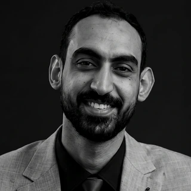
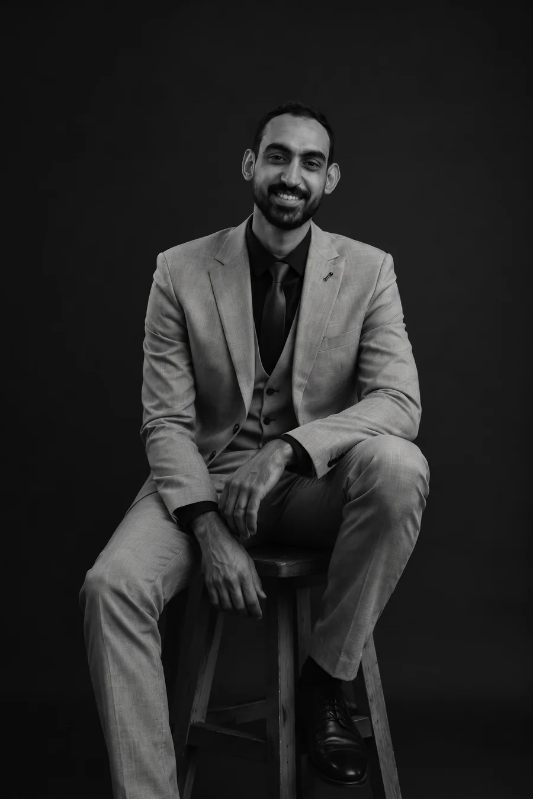
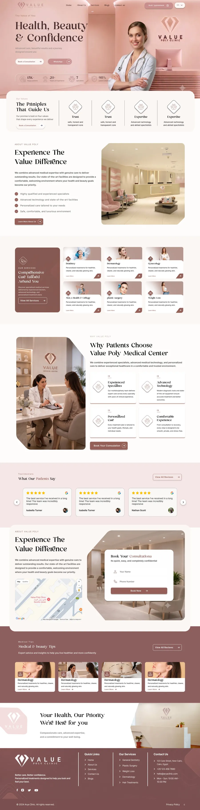
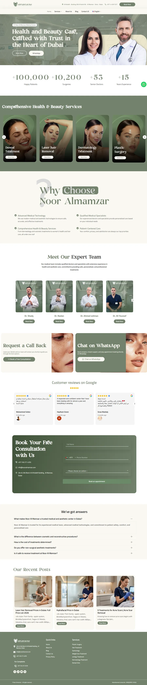
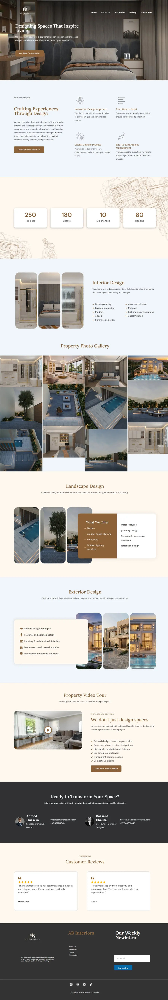
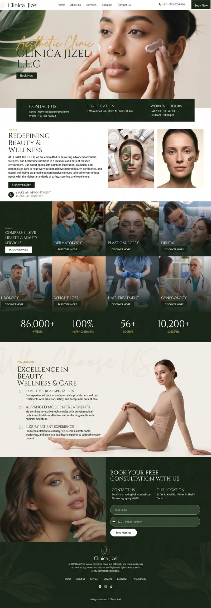
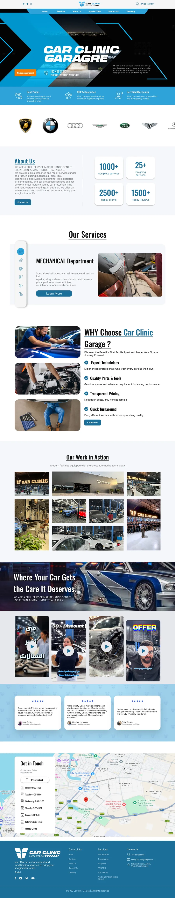

Value Poly
موقع مركز طبي
موقع لمركز طبي متعدد التخصصات، منظّم حوالين خدماته: طريقة واضحة للدخول لكل تخصص، تقييمات المرضى، وفورم حجز موجود دايمًا في متناول الإيد.
اطّلع على دراسة الحالةمطور ويب ومصمم UI/UX
أنا أحمد علي غالي. بآخد التجربة الرقمية من الألف للياء، من أول فكرة لحد آخر سطر كود، عشان مفيش حاجة تضيع بين التصميم والكود.
ومهووس بالتفاصيل اللي محدش واخد باله منها — عندي فيها نفس مزاجي وأنا بلعب طاولة: كل نقلة ليها حساب.

أحمد علي غالي01—05 أعمال مختارة
خمس مواقع، كل واحد بنطاق مختلف — بعضها بناء ووردبريس كامل، وبعضها ملف فيجما متسلّم كامل لفريق تاني — بس التصميم وتجربة المستخدم والمحادثات مع العميل كانت شغلي في كل واحد فيهم.
موقع مركز طبي
موقع لمركز طبي متعدد التخصصات، منظّم حوالين خدماته: طريقة واضحة للدخول لكل تخصص، تقييمات المرضى، وفورم حجز موجود دايمًا في متناول الإيد.
اطّلع على دراسة الحالةموقع عيادة ثنائي اللغة
موقع عيادة طبية ثنائي اللغة (عربي/إنجليزي) بيوازن بين أربع تخصصات ولغتين في هيدر واحد، بهوية بصرية سادج هادية وأرقام الثقة متحطة قبل أي كلام عن الخدمات.
اطّلع على دراسة الحالةموقع استوديو تصميم داخلي
موقع استوديو تصميم بيغطي تلات خدمات — داخلي وخارجي ولاندسكيب — كل واحدة بتصميم مختلف، مدعومة بمعرض فيه أكتر من 50 صورة عقارات وفيديو تعريفي من عميل حقيقي.
اطّلع على دراسة الحالةموقع عيادة تجميل فاخرة
موقع عيادة تجميل فاخرة بيغطي سبع تخصصات، مبني حوالين صور حقيقية للعلاجات بدل الأيقونات، مع معلومات عملية وحجز قريب دايمًا من الزائر.
اطّلع على دراسة الحالةموقع ورشة سيارات
موقع ورشة سيارات فاخرة اتصمم عشان يبان تقني وموثوق لحد بيسلّم عربية فاخرة، بيبدأ بشريط ماركات العربيات وصور حقيقية للورشة قبل أي كلام عن الخدمات.
اطّلع على دراسة الحالة
FIG. 01 — AG / 2026بصمم التجربة، وبعدين بنفذها بنفسي، عشان القرارات اللي بتتاخد على الكانفاس تكون هي نفسها اللي توصل للمتصفح.
برا الشغل بحب الألعاب اللي الموضع فيها مهم: الشطرنج، الكورة، الطاولة. دول بيشكّلوا طريقة شوفي للمنتج: كل جزء وظيفته إيه، الناس عندها معلومات قد إيه، وبعد كام خطوة هيحصل إيه.
أربع مراحل، كل واحدة ليها قاعدة بارجعلها دايمًا.
الموضع قبل القطع.
بابدأ بمين هيستخدمه، وعايز يحقق إيه، وغلطة هتكلفه قد إيه. الشاشات بتيجي بعد كده.
الأدوار قبل المكوّنات.
كل عنصر له مهمة واحدة. الهرمية والتدفقات والنسخ المختلفة بتتحدد كنظام كامل، مش شاشة شاشة.
التصميم بيتنفذ زي ما اتصمم بالظبط.
مكونات، توكنز، بريك بوينتس حقيقية، صفحات سريعة. اللي اتقرر في فيجما بيعدي بسلام للمتصفح.
اراهن على الاحتمالات، وبعدين راجع التفاصيل.
أطلق، شوف الناس بتعمل إيه فعلًا، عدّل. وبعدين الـ 8px.
النسخة النضيفة بسيطة. النسخة الحقيقية… شوية مختلفة.
النسخة الحقيقية. دوس Next.
التصميم الكويس مش اللي معملوش فيه ولا تعديل.هو اللي باستمرار بيبقى أحسن، لأننا بنتعلم حاجة جديدة.
ده هو التصميم.




